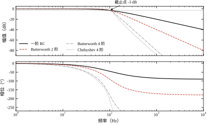
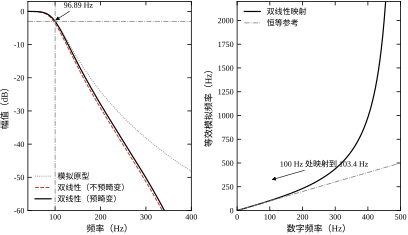
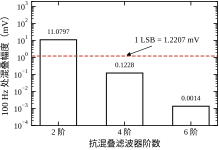
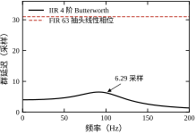
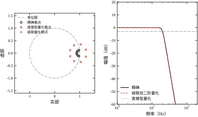

一套力控试验台上，量程 5 V、12 位的采集卡直接接应变式力传感器的放大器输出。传感器带宽足够，放大器也没问题，控制周期 1 ms，按采样定理 1 kHz 就够用。可是闭环一投运，力反馈上就叠着一个约 100 Hz 的等幅振荡，幅值折算到力上接近满量程的 20%。
干扰源最后查到是一台开关电源，开关频率 1900 Hz。采样率取 2 kHz 时，1900 Hz 以 |2000-1900|=100 Hz 的折叠频率出现在数据里，与真实的 100 Hz 信号完全重合，事后再怎么分析也分不开。采集卡前没有任何抗混叠滤波，1 V 的干扰原封不动地叠进信号；5 V 量程、12 位对应的一个 LSB 是 1.2207 mV，这 1 V 相当于 819 个 LSB。
在采集卡前加一级截止 200 Hz 的抗混叠低通，情况按阶数分档变化：2 阶把 1900 Hz 压到 -39.11 dB，残余 11.0797 mV，仍是 907.65% LSB；4 阶压到 -78.22 dB，残余 0.1228 mV，降到 10.06% LSB；6 阶压到 -117.33 dB，残余 0.0014 mV，只有 0.11% LSB。同一颗干扰，2 阶与 6 阶之间差 78 dB，相当于把 1000 mV 压到 1.4 μV。 这就是滤波器设计要回答的第一个问题：需要多少阶、截止频率定在哪里。
滤波器不是“加了就更好”的装饰件。它同时改变四件事：幅值（压掉什么、留下什么）、相位（引入多少滞后）、噪声带宽（进去多少噪声）、瞬态（阶跃后多久稳定）。四件事互相牵制，任何一项没算清楚，滤波器都会从帮手变成故障源。
第一件是幅值。 通带内要平，阻带内要陡。这两个要求方向相反：同样阶数下，通带越平（Butterworth），阻带下降越缓；阻带下降越陡（Chebyshev、椭圆），通带就越不平。选型本质上是在这两个指标之间做交换，而不是找一个“最好”的滤波器。
第二件是相位。 任何因果滤波器的相位都随频率下降，斜率就是群延迟。4 阶 Butterworth、截止 100 Hz、采样 1 kHz，在 10 Hz 处群延迟 4.04 个采样，50 Hz 处 4.66 个，100 Hz 处 6.29 个。延迟不是常数，意味着不同频率的成分到达时刻不同，波形会变形。对力环这类以稳态精度为主的回路，几毫秒延迟可以接受；对位置环、特别是高增益位置环，这几毫秒直接吃掉相位裕度。
第三件是噪声带宽。 白噪声经过滤波器后，功率按 |H|^2 加权积分。把带宽从 1 kHz 压到 100 Hz，噪声功率大致降到十分之一，有效值降到约三分之一。这是滤波器最直接的收益，也是最容易被误算的一项：噪声带宽不等于 -3 dB 带宽，高阶滤波器的噪声带宽更接近其等效矩形宽度，需要按积分算，不能拿截止频率顶替。
第四件是瞬态。 滤波器是有状态的，输入突变时输出要经历一段建立过程。一阶环节的时间常数是 1/\omega_c，4 阶 Butterworth 的阶跃建立时间大约是前者的数倍，且伴随过冲或振铃。控制器在阶跃给定后立即用反馈做闭环，看到的是尚未建立的滤波输出，会把这段瞬态当成真实偏差去修正，形成一次额外的扰动。
抗混叠滤波必须在采样之前完成。采样一旦发生，高于 Nyquist 的频率就折叠进低频，与真实信号不可分离，任何数字算法都无法把它们还原——这不是算法能力问题，是信息已经丢失。因此抗混叠滤波只能放在 ADC 之前，用模拟电路实现；或者用远高于信号带宽的采样率（过采样）把折叠频率推远，再用数字滤波降采样。
采样之后的滤波则可以全部数字化。数字滤波器的系数由设计者确定，不受电阻电容容差、温度漂移、老化的影响；同一段代码在不同板子上给出完全相同的响应；改变截止频率只需改系数，不用动硬件。代价是量化效应：系数只能用有限位表示，运算只能用有限位宽的累加器，这两件事在高阶、低截止频率的场合会把滤波器彻底毁掉。
本章的边界正是这条分界线两侧的设计问题：模拟原型怎么选、数字实现怎么对应、量化与相位代价怎么算。采样定理与保持器见第 4 章，传感器的带宽与输出阻抗见第 12 章，本章不重复。
在画电路或写差分方程之前，下面六个问题必须能给出定量答案，它们对应 §14.6 的六组实验：
这六个问题的共同点是：答案都是数，不是形容词。 “滤波器要陡一点”不是设计，“1900 Hz 处至少 100 dB”才是设计。
本章的核心是：滤波器的设计是在幅值、相位、噪声与可实现性之间做定量交换；模拟原型决定交换的比例，双线性变换决定频率轴怎么弯，定点字长决定交换在硬件上还成不成立。
路线是：§14.2 定义频率响应、群延迟、四类模拟原型与双线性变换；§14.3 推导原型参数与衰减、频率映射与预畸变、抗混叠阶数、群延迟、微分噪声增益与系数量化灵敏度；§14.4 讲离散实现，包括双二阶结构、定点标度、累加器位宽与延时对齐；§14.5 讲工程边界，包括噪声带宽、相位裕度代价、采样率选择与实现方式；§14.6 用六组实验核对解析式；§14.7 收束。
与相邻章的分工：采样与保持见第 4 章，传感器信号链见第 12 章，测速与差分噪声见第 7 章，控制器对测量噪声的敏感度见第 41 章。PID 整定见第 44 章与第 106 章，MPC 见第 58 章与第 80 章，Smith 预估见第 47 章与第 107 章。本章只讲“滤波器怎么设计、代价怎么算”，不重复这些章的内容。
第一个错误直觉：阶数越高越好。 阶数升高，阻带更陡，但群延迟更大、相位非线性更强、定点实现更脆弱。8 阶直接型在 12 位系数下已经发散，而同样指标用 4 个双二阶级联就能稳定工作。阶数是被指标逼出来的下限，不是可以随便加的安全余量。
第二个错误直觉：数字滤波可以替代抗混叠。 数字滤波器工作在采样之后，对已经折叠进带内的分量无能为力。1900 Hz 折叠成 100 Hz 之后，它与真实的 100 Hz 在数据里是同一个频率，任何线性时不变算法都分不开。抗混叠是采样前的物理任务，不是采样后的数学任务。
第三个错误直觉：截止频率取高一点更“保真”。 截止频率越高，通带越宽，看似保留了更多信号，实际放进来的噪声按带宽开方增长，抗混叠对干扰的衰减也同比减少。截止频率应当由信号真实带宽加少量余量确定，余量过大等于主动放弃滤波收益。
把滤波器放回信号链，位置比参数更容易出错。一条典型的力控信号链是：应变桥 → 仪表放大器 → 抗混叠低通 → ADC → 数字低通 → 控制器。五段各有各的延迟，加起来才是反馈通道的总滞后。
以 1 kHz 采样、模拟抗混叠一阶 100 Hz、数字四阶 100 Hz 为例，各段延迟大约是：仪表放大器 0.1 ms，模拟低通的时间常数 1/(2\pi\times100)=1.59 ms，ADC 采样保持与转换 0.5 ms，数字滤波器在 20 Hz 处群延迟约 4 ms，合计约 6.2 ms。若穿越频率是 20 Hz，这 6.2 ms 对应 360\times20\times0.0062=44.6^\circ 的相位滞后，已经吃掉了大半裕度。
这条账说明一件事：滤波器的相位代价不是它一个人的，而是整条链分摊的。 模拟端多一阶，数字端就少一阶；ADC 换高速型号，滤波器就可以更陡。设计时要把五段写在一张纸上，逐段填延迟，而不是各自“留一点余量”。
某位置环原本用 1 kHz 采样、没有滤波，穿越频率 20 Hz，相位裕度 42^\circ，运行正常。因为反馈噪声大，工程师在数字端加了一只 4 阶 Butterworth 低通，截止频率取 20 Hz，理由是“刚好等于穿越频率，不影响带宽”。
上电后系统持续振荡。原因在相位：4 阶 Butterworth 在截止点的相位正好是 -45^\circ\times4=-180^\circ，加上对象与采样本身的滞后，环路总相位在 20 Hz 处已经越过 -180^\circ，相位裕度变成负值。滤波器在截止频率处不是一个“不影响”的环节，而是贡献 -180^\circ 的环节。
正确的做法有两条：把截止频率提到 100 Hz（穿越频率的 5 倍），此时 20 Hz 处滞后只有 29.1^\circ；或者保持 20 Hz 截止但把阶数降到 1 阶，滞后 45^\circ，靠提高采样率或降低增益补回裕度。两条路的共同点是：先算相位，再定参数。
范围先划清，后面才不跑题。
第一，不讨论自适应滤波与状态估计。 LMS、RLS、卡尔曼滤波都在处理“信号与噪声的统计关系”，它们的误差模型是概率的，设计目标是均方误差最小；本章的滤波器是确定性的，设计目标是幅频与相频。两者可以串联，但不能混为一谈，后者见第 41 章。
第二，不讨论模拟电路的物理实现。 布线、地平面、屏蔽、EMC 属于硬件设计，本章只到拓扑与元件取值（14.4.13 节），再往下就超出“控制”的范围。
第三，不讨论非线性与时频方法。 中值滤波、限幅、小波去噪都不是线性时不变环节，不能用传递函数描述，也就没有幅频与群延迟可言。本章只在 14.4.4 节提到限幅与极限环的关系，那是为了说明定点实现的副作用，不是介绍非线性滤波。
本章的对象始终是线性、时不变、因果、有理传递函数的低通环节。这个限制看起来窄，但工业信号链上九成以上的滤波任务都落在里面；把这一层做扎实，剩下的问题才有讨论的基础。
线性时不变滤波器在频域由一个复函数描述。输入为 A\sin(2\pi f t) 时，稳态输出为 A|H(j2\pi f)|\sin(2\pi f t+\varphi(f))，其中 |H| 是幅频特性，\varphi 是相频特性。工程上幅值用分贝表示：
L(f)=20\log_{10}\left|H(j2\pi f)\right| \tag{14-1}
分贝是对数刻度，十倍频程上等间距的斜率才成为直线，这也是 Bode 图用对数横轴的原因。每十倍频程 20 dB 等于每二倍频程 6.02 dB，两个说法在文献里混用，换算时不要丢那 0.02。
滤波器按通带位置分低通、高通、带通、带阻。本章以低通为主线：低通是最基本的原型，高通可由低通经频率变换得到，带通可由低通经两次变换得到，这些变换只改变频率轴，不改变逼近性质。控制系统的信号调理九成以上是低通，因为传感器带宽、机械带宽、干扰频率三者的相对位置决定了必须先把高频压掉。
相位延迟是 \tau_p=-\varphi(\omega)/\omega，含义是“这个频率的正弦波被推迟了多久”。群延迟是相位对频率的导数：
\tau_g(\omega)=-\frac{\mathrm{d}\varphi(\omega)}{\mathrm{d}\omega} \tag{14-2}
含义是“这一小簇频率成分整体的包络被推迟了多久”。两者只有在相位严格线性时才相等；一般滤波器里，相位延迟描述单频，群延迟描述包络，失真的程度由 \tau_g 随频率的变化率衡量。
这个区分对控制回路有直接后果。反馈信号里的阶跃、斜坡、脉宽这类宽带成分，其波形由群延迟决定；单一频率的扰动（比如 50 Hz 工频、100 Hz 开关纹波）由相位延迟决定。调相位裕度时看群延迟，算单频干扰的补偿角时看相位延迟，用错一个，补偿方向可能反掉。
一阶低通的传递函数为
H(s)=\frac{1}{1+s/\omega_c} \tag{14-3}
令 s=j\omega，得幅频与相频：
\left|H(j\omega)\right|=\frac{1}{\sqrt{1+(\omega/\omega_c)^2}},\qquad \varphi(\omega)=-\arctan\frac{\omega}{\omega_c} \tag{14-4}
在 \omega=\omega_c 处幅值降到 1/\sqrt{2}，即 -3.01 dB，相位为 -45^\circ；在 10\omega_c 处幅值为 1/\sqrt{101}，即 -20.04 dB，相位 -84.29^\circ。渐近线给出的 -20 dB 与实测 -20.04 dB 之差，来自根号里那个被忽略的 1：离截止频率只有一个十倍程时，渐近线仍有 0.04 dB 的乐观偏差，要求严格的场合要按精确式算。
一阶环节的时间常数为 \tau=1/\omega_c=1/(2\pi f_c)，阶跃响应为 1-e^{-t/\tau}，达到 63.2% 用 \tau，达到 95% 用 3\tau，达到 99% 用 4.6\tau。截止 100 Hz 对应 \tau=1.59 ms，建立到 1% 要 7.3 ms；这个数在 §14.5 讨论闭环延时时要反复用到。
n 阶 Butterworth 低通的幅平方为
\left|H(j\omega)\right|^2=\frac{1}{1+(\omega/\omega_c)^{2n}} \tag{14-5}
它在 \omega=0 处的前 2n-1 阶导数全为零，因此通带内最平；在 \omega\gg\omega_c 处近似为 (\omega_c/\omega)^n，斜率固定为每十倍频程 20n dB。极点均匀分布在左半平面半径为 \omega_c 的圆上：
s_k=\omega_c\exp\left(j\pi\frac{2k+n+1}{2n}\right),\qquad k=0,1,\dots,n-1 \tag{14-6}
二阶节的品质因数为
Q_k=\frac{1}{2\left|\cos\theta_k\right|},\qquad \theta_k=\pi\frac{2k+n+1}{2n} \tag{14-7}
n=4 时两组极点分别对应 Q=0.5412 与 Q=1.3066。低 Q 节放在级联前级、高 Q 节放在后级，可以让中间状态的动态范围最小，这条规则在 §14.4 讲定点实现时还会回来。
实验核对很干脆：截止 100 Hz 的 2 阶与 4 阶 Butterworth，在 1 kHz 处实测 -40.00 dB 与 -80.00 dB，在 10 kHz 处 -80.00 dB 与 -160.00 dB，与 20n dB/十倍频程完全一致；在截止点处相位分别为 -90.00^\circ 与 -180.00^\circ，正好是 -45^\circ\times n。
Chebyshev I 型的幅平方为
\left|H(j\omega)\right|^2=\frac{1}{1+\varepsilon^2T_n^2(\omega/\omega_c)},\qquad \varepsilon=\sqrt{10^{R_p/10}-1} \tag{14-8}
其中 T_n 是第一类 Chebyshev 多项式，R_p 是通带纹波（dB）。通带内幅值在 1 与 1/\sqrt{1+\varepsilon^2} 之间等幅起伏，纹波 0.5 dB 时最小值为 0.9441，实测正是这个数。代价换来的是更陡的过渡带：同样 4 阶、同样截止频率，Chebyshev 在 1 kHz 处衰减 -88.84 dB，比 Butterworth 的 -80.00 dB 多压 8.84 dB，在 10 kHz 处多压 8.93 dB。
代价不止纹波。Chebyshev 的极点椭圆分布，靠近虚轴的那一对 Q 值显著高于同阶 Butterworth，阶跃过冲更大、群延迟峰值更高。4 阶、0.5 dB 纹波的 Chebyshev 在截止点的相位是 -206.97^\circ，而 Butterworth 是 -180.00^\circ，多出的 26.97^\circ 就是相位代价。
模拟原型要变成数字滤波器，最常用的映射是双线性变换：
s=\frac{2}{T}\cdot\frac{z-1}{z+1},\qquad T=\frac{1}{f_s} \tag{14-9}
它把 s 平面左半平面一一映射到 z 平面单位圆内，因此稳定的模拟原型必然得到稳定的数字滤波器，这是它相对冲激响应不变法的核心优势。代价是频率轴被非线性压缩：整个模拟频率轴 0\le\omega_a<\infty 被压进数字频率 0\le\omega_d<\pi，映射关系为
\omega_a=2f_s\tan\frac{\omega_d}{2},\qquad f_a=\frac{f_s}{\pi}\tan\frac{\pi f_d}{f_s} \tag{14-10}
为了让数字截止频率准确落在目标值，需要预畸变：先按式 (14-10) 把目标数字频率换成模拟频率，再用这个模拟频率设计原型。
\omega_c^{\mathrm{pre}}=2f_s\tan\frac{\pi f_c}{f_s} \tag{14-11}
不预畸变时，目标 100 Hz、采样 1 kHz 的设计，实际 -3 dB 落在 96.89 Hz，偏低 3.11%；预畸变后落在 100.00 Hz，偏差小于 10^{-4} Hz。3.11% 在 100 Hz 上不算大，但同样的相对偏差在截止频率接近 f_s/2 时会急剧放大，因为 \tan 在 \pi/2 附近发散。
FIR 滤波器的输出只依赖有限个历史输入，y[k]=\sum_{m=0}^{N-1}h[m]x[k-m]。若系数满足对称条件
h[m]=h[N-1-m] \tag{14-12}
则其相位严格线性，群延迟恒为
\tau_g=\frac{N-1}{2}\quad\text{（采样）} \tag{14-13}
与频率无关。这是 FIR 相对 IIR 的唯一不可替代的优点：波形不畸变。代价是同样陡度需要高得多的阶数，且延迟正比于抽头数。
理想的低通冲激响应是 sinc 函数，直接截断会在通带和阻带产生 Gibbs 振荡。加窗是抑制振荡的标准手段：Hamming 窗把第一旁瓣从 -13 dB 压到 -43 dB，代价是过渡带展宽约一倍。63 抽头、截止 100 Hz、采样 1 kHz 的 Hamming 窗 FIR，通带 0–50 Hz 最大偏差 0.257%，200 Hz 处衰减 -59.06 dB，100 Hz 处幅值 0.5008——截止点取半幅，与窗函数展宽过渡带一致。
表 14-1 把四种原型的实测指标并列。所有数字来自 §14.6 实验一，截止频率统一为 100 Hz，Chebyshev 纹波 0.5 dB。
表 14-1 四类模拟原型在截止 100 Hz 时的实测指标
| 类型 | 1 kHz 衰减/dB | 10 kHz 衰减/dB | 截止点相位/(°) | 通带最小幅值 | 适用场合 |
|---|---|---|---|---|---|
| 一阶 RC | -20.04 | -40.00 | -45.00 | 1.0000 | 只需一阶斜率、要求相位简单 |
| Butterworth 2 阶 | -40.00 | -80.00 | -90.00 | 1.0000 | 通用抗混叠、通带要平 |
| Butterworth 4 阶 | -80.00 | -160.00 | -180.00 | 1.0000 | 陡度与相位折中 |
| Chebyshev 4 阶 | -88.84 | -168.93 | -206.97 | 0.9441 | 过渡带紧、允许纹波与过冲 |
读这张表要抓住两点。第一，Butterworth 的衰减严格按 20n dB/十倍频程走，Chebyshev 只多出约 8.8 dB 的固定增量，因为两者阶数相同、高频渐近斜率相同，差别只在过渡带的形状；想再陡必须加阶数或换椭圆滤波器。第二，通带最平与相位最小是一对不可兼得的性质，Butterworth 两样都居中，Chebyshev 用纹波和相位换陡度，选型就是在这条权衡线上挑一个点。
Butterworth 与 Chebyshev 之外，还有两种常被提到的逼近，它们把权衡推到了两端。
Bessel 滤波器追求的是最大平坦群延迟，而不是最大平坦幅频。它的极点由 Bessel 多项式给出，相位在通带内接近线性，阶跃响应几乎没有过冲，波形保真最好。代价是过渡带很缓：同样阶数下，它在截止点之后的衰减远慢于 Butterworth，要达到同样的阻带指标往往要多两到四阶。Bessel 适合“波形不能变形”的场合，比如脉冲测量、音频，不适合以抗混叠为主要目标的信号调理。
椭圆滤波器（Cauer）在通带和阻带都做成等波纹，并且在虚轴上放置传输零点，因此在给定阶数下过渡带最陡。它的代价是三重的：通带纹波、阻带纹波、以及最差的相位非线性；传输零点还会让阶跃响应出现高频振铃。定点实现时，椭圆滤波器的系数量化灵敏度也最高，窄带设计尤其危险。
把四种逼近排成一条线：Bessel（相位最好、陡度最差）—Butterworth（居中）—Chebyshev（偏陡）—椭圆（最陡、相位最差）。选型不是选“最好的”，而是选“代价落在可接受位置”的。
本章只推导低通，是因为其他类型都可以由低通变换得到，变换只改频率轴，不改逼近性质。
低通到高通用倒数映射：
s\;\rightarrow\;\frac{\omega_c^2}{s} \tag{14-14}
低通到带通用
s\;\rightarrow\;\frac{s^2+\omega_0^2}{Bs},\qquad B=\omega_2-\omega_1,\qquad \omega_0=\sqrt{\omega_1\omega_2} \tag{14-15}
其中 \omega_1、\omega_2 是带通的上下边沿，B 是带宽，\omega_0 是几何中心频率。变换后阶数翻倍：n 阶低通原型变成 2n 阶带通。一只 4 阶低通原型做带通，落地是 8 阶，极点翻倍、量化灵敏度上升，这是带通设计比低通难的根本原因。
工程上还有一条实用规则：带通的相对带宽 B/\omega_0 小于 10% 时，直接设计带通滤波器对系数量化极其敏感，应当考虑先把信号搬移到低频、低通滤波、再搬回去，用两次混频换掉一只窄带滤波器。
把模拟原型变成数字滤波器，常用的映射有三种，选择取决于是否允许混叠与频率弯折。
冲激响应不变法令 h[k]=T\,h(kT)，时域采样直接对应。它的频响是模拟频响的周期延拓，若模拟原型在 f_s/2 以上还有能量，就会混叠；因此只适用于带限严格的原型，不适合高通与带阻。
双线性变换用式 (14-9) 的代数映射，把整个左半平面压进单位圆，不产生混叠，代价是频率弯折。它是本章的主线，也是绝大多数数字低通、高通、带通的设计方法。
匹配零极点法把每个极点、零点按 z=e^{sT} 映射，再在某个频点（通常是直流或截止点）匹配增益。它不保幅频形状，但保极点位置，常用于控制器离散化，比如把连续 PID 变成增量式算法；PID 的具体离散化见第 44 章与第 106 章，本章不展开。
三种方法的选择可以压成一句话：要求幅频准确、无混叠，用双线性；要求时域波形，用冲激响应不变；要求极点对应，用匹配零极点。
一只数字滤波器可以用四种等价方式描述，选哪种写法决定了数值性质与实现难度。
传递函数写成 H(z)=B(z)/A(z)，系数按 z 的降幂排列。它最直观，适合手算频响；高阶时系数动态范围大，直接实现最脆弱。
零极点增益写成 H(z)=g\prod(z-z_i)/\prod(z-p_i)。它把稳定性直接摆在眼前：所有 |p_i|<1 即稳定；也便于拆成级联双二阶，是定点实现前的标准中间形式。
差分方程写成 y[k]=\sum b_mx[k-m]-\sum a_my[k-m]。它最接近代码，移植时逐项对照即可；缺点是看不出稳定性，符号也容易写错。
状态空间写成 \mathbf{s}[k+1]=A\mathbf{s}[k]+Bx[k]、y[k]=C\mathbf{s}[k]+Dx[k]。它的状态变量有明确的物理量级，便于定标与溢出分析；多输入多输出时尤其方便。
四种写法之间可以精确互转，但数值性质不同：同一只 8 阶滤波器，传递函数形式的极点对系数扰动极其敏感，零极点形式拆成级联后几乎无损。这就是 §14.3.6 那个实验的全部内容。
用 4 阶 Butterworth、截止 100 Hz、采样 1 kHz 的实测相位，可以看清两个延迟的区别。
10 Hz 处相位 -14.50^\circ，相位延迟 14.50/(360\times10)=4.03 ms，群延迟 4.04 ms，两者几乎相等；50 Hz 处相位 -75.83^\circ，相位延迟 75.83/(360\times50)=4.21 ms，群延迟 4.66 ms，差 0.45 ms；100 Hz 处相位 -180.00^\circ，相位延迟 5.00 ms，群延迟 6.29 ms，差 1.29 ms。
规律很清楚：频率越低，两者越接近；接近截止频率，群延迟明显大于相位延迟。 对控制回路，这意味着低频段的“延迟”可以用一个常数近似，高频段不行；若穿越频率接近滤波器截止频率，必须用群延迟，不能用相位除以频率。
频响曲线是结果，零极点图是原因。同一只滤波器，从零极点图能直接读出四件事，不必逐点扫频。
第一，极点模决定衰减快慢。 冲激响应的包络按 r^{k} 收缩，r 是极点模，k 是采样序号。8 阶 Butterworth（20 Hz、1 kHz）的四个极点模是 0.883778、0.900693、0.932632、0.975840，时间常数 1/(1-r) 分别为 8.6、10.1、14.8、41.4 个采样。最慢的那个极点决定整只滤波器的建立时间：要衰减到 1%，需要 4.6/(1-0.975840)=190 个采样，即 190 ms，而不是按截止频率 20 Hz 估出的 50 ms。
第二，极点角对应振荡频率，不是截止频率。 2 阶 Butterworth、f_c=100 Hz、f_s=1 kHz 的两个极点是 0.57149\pm0.293599\mathrm{j}，模 0.6425，极角 27.2^\circ，对应阻尼振荡频率 27.2/360\times1000=75.6 Hz。它既不是 100 Hz，也不是模拟原型的 70.7 Hz。把极点角当成截止频率，是读零极点图最常见的错误。
第三，零点位置决定阻带形状。 本章所有低通的零点都压在 z=-1（Nyquist 频率），所以高频被彻底挡住；若零点偏离 -1，就会在某个频率形成一个凹口，凹口深度与零点到单位圆的距离成反比。陷波器就是这么做的，但用它做低通会留下凹口两侧的抬升。
第四，极点离单位圆越近，对系数越敏感。 r=0.975840 与 1 只差 0.0242，量化误差只要把这个差吃掉一半，滤波器就接近临界；14.4.11 节里 r 从 0.975840 涨到 1.254705，只变了 0.28，性质却从稳定变成发散。看一个滤波器好不好实现，先看最靠近单位圆的那个极点模，而不是看阶数。
工程上很少手算系数，多数人直接调用现成函数。这些函数的默认参数里有四条约定，不知道就会算错。
第一，归一化频率的参照是 Nyquist，不是采样率。 butter(4, 0.2) 里的 0.2 表示 0.2\times f_s/2，在 f_s=1 kHz 时是 100 Hz，与 butter(4, 100, fs=1000) 得到的系数完全一致（两者差为零）。把 0.2 当成“200 Hz”是初学阶段最常见的量纲错误。
第二，数字设计默认走双线性变换并预畸变。 调用者不需要自己写 \tan，函数内部已经对截止频率做了预畸变；反过来说，如果调用者又手工预畸变一次，就会二次畸变，截止频率偏高。
第三，默认输出是直接型系数，不是级联节。 output="ba" 返回两个长度为 n+1 的数组；output="sos" 返回 n/2 行、每行 6 个数的二阶节矩阵。4 阶时 sos 的形状是 (2,6)。在 14.4.11 节那个例子里，直接型输出恒为零，级联型只差 0.14%；默认值恰好是危险的那一种。
第四，阶数与指标是两套接口。 butter 只接受阶数，要“给指标求阶数”必须用 buttord。对通带 100 Hz、阻带 200 Hz、通带波动 1 dB、阻带 60 dB、f_s=1 kHz，buttord 返回 n=10 与 W_n=106.4944 Hz。注意返回的截止频率不是 100 Hz 而是 106.49 Hz——它把截止点往外挪了一点，让 200 Hz 处恰好满足 60 dB，而不是把通带边缘卡死。直接用 100 Hz 配 10 阶，阻带会差一点点；这个“一点点”正是设计裕度。
还有一个容易忽略的默认值：freqz 默认只算 512 个点，横轴从 0 到 3.135 rad/采样，最后一点不是 \pi 而是 \pi\times511/512。截止频率正好落在两点之间时，读数会偏低。把 worN 显式放大，或直接用设计时的 f_c 代入复频响，比看默认曲线可靠。
任何偶数阶低通都可以拆成若干二阶节，二阶节是分析相位、过冲与定点动态范围的基本单位。标准二阶低通写作
H(s)=\frac{\omega_n^2}{s^2+2\zeta\omega_n s+\omega_n^2},\qquad Q=\frac{1}{2\zeta} \tag{14-16}
当 Q>1/\sqrt{2} 时幅频出现谐振峰，峰值与峰值频率为
M_r=\frac{Q}{\sqrt{1-1/(4Q^2)}},\qquad \omega_r=\omega_n\sqrt{1-\frac{1}{2Q^2}} \tag{14-17}
4 阶 Butterworth 的两节 Q 分别为 0.5412 与 1.3066，后者的谐振峰为 1.4142，即 +3.01 dB，峰值频率 0.841\omega_n。整只 4 阶滤波器仍是最大平坦的，因为前一节在同一频段有约 -3 dB 的凹陷，两节相乘正好抵消。单节有峰不等于整机有峰，看滤波器要看级联后的总幅频，不能只看一节。
时域上，二阶节的阶跃过冲为
M_p=\exp\left(-\frac{\pi\zeta}{\sqrt{1-\zeta^2}}\right) \tag{14-18}
Q=1.3066 对应 \zeta=0.3827，单节过冲 27.2%；Q=0.5412 对应 \zeta=0.924，几乎没有过冲。级联后总过冲会因两节相互补偿而下降，但高 Q 节的位置决定了中间信号的峰值：把它放在前级，中间信号会被放大 1.41 倍后再进入后级，定点实现时容易溢出；放在后级，前级输出幅度小，动态范围更宽松。
不预畸变时，模拟截止频率取 \omega_c=2\pi f_c，数字滤波器真正 -3 dB 的位置由式 (14-10) 反解：
\omega_c=2f_s\tan\frac{\pi f_3}{f_s} \;\Longrightarrow\; f_3=\frac{f_s}{\pi}\arctan\frac{\pi f_c}{f_s} \tag{14-19}
代入 f_c=100 Hz、f_s=1000 Hz，\pi f_c/f_s=0.31416，\arctan 0.31416=0.30440，得 f_3=96.89 Hz，与数值搜索的 96.8922 Hz 逐位一致。这个闭式说明偏移量只取决于比值 f_c/f_s：比值越小偏移越小，f_c/f_s=0.1 时偏 3.11%，f_c/f_s=0.01 时只偏 0.03%。
预畸变的做法是把式 (14-10) 正向用一次：先算出预畸变后的模拟截止角频率 \omega_c^{\mathrm{pre}}=2\pi\times103.43\ \text{rad/s}，再用 103.43 Hz 设计模拟原型，双线性变换后正好落回 100.00 Hz。注意预畸变只校正截止点，不校正其他频率：200 Hz 处的响应仍然被向上弯折，等效模拟频率为 231.3 Hz。这就是为什么预畸变后的数字滤波器在 200 Hz 处幅值是 0.196116，反而低于模拟原型的 0.242536——它在截止点之上比原型更陡。
n 阶 Butterworth 在频率 f 处的精确衰减为
A(f)=10\log_{10}\left[1+\left(\frac{f}{f_c}\right)^{2n}\right] \tag{14-20}
当 f\gg f_c 时退化为 20n\log_{10}(f/f_c)。给定所需衰减 A_{\mathrm{req}} 与频率比 f/f_c，阶数下限为
n\ge\frac{A_{\mathrm{req}}}{20\log_{10}(f/f_c)} \tag{14-21}
要求 100 dB、f/f_c=1900/200=9.5，分母为 20\times 0.9777=19.55，得 n\ge5.11，向上取整为 6 阶。若只要求 40 dB，n\ge2.05，3 阶即可。阶数是按所需衰减算出来的，不是按“听起来更稳”选的。
混叠频率由折叠公式确定：
f_{\mathrm{alias}}=\left|f_{\mathrm{int}}-k f_s\right|,\qquad k=\operatorname{round}\left(\frac{f_{\mathrm{int}}}{f_s}\right) \tag{14-22}
1900 Hz 干扰、2 kHz 采样，k=1，折叠到 100 Hz；若采样率改成 1.9 kHz，k=1，折叠到 0 Hz，变成直流偏置——同样的干扰，采样率不同，落点完全不同，这是选采样率时必须一起算的。
表 14-2 截止 200 Hz 的抗混叠滤波器对 1900 Hz 干扰的抑制（12 位、5 V 量程）
| 阶数 | 精确衰减/dB | 残余幅度/mV | 占 1 LSB/% | 结论 |
|---|---|---|---|---|
| 2 | -39.11 | 11.0797 | 907.65 | 混叠比信号还大，不可用 |
| 4 | -78.22 | 0.1228 | 10.06 | 可用，但仍有 10% LSB 的纹波 |
| 6 | -117.33 | 0.0014 | 0.11 | 低于量化噪声，足够 |
表 14-2 的第三列是把残余幅度折算到 1 LSB 的百分比，这个折算比 dB 更有工程意义：滤波器的任务不是把干扰压到“很小”，而是压到量化噪声以下。12 位系统的量化噪声有效值约为 q/\sqrt{12}=0.352 mV，6 阶方案残余 0.0014 mV，已经比量化噪声低两个数量级，再加阶数没有收益。
IIR 的群延迟由相位导数给出，实测 4 阶 Butterworth（截止 100 Hz、采样 1 kHz）在 10 Hz 处 4.04 个采样、50 Hz 处 4.66 个、100 Hz 处 6.29 个。三个数说明两件事：低频段延迟接近常数，进入过渡带后迅速上升；用常数延时去补偿 IIR，只能在低频段补得准，接近截止频率必然补不干净。
FIR 的群延迟由对称性严格锁定在 (N-1)/2 个采样，63 抽头就是 31 个采样、31 ms，与频率无关。它的绝对值比 IIR 大一个数量级，但可以精确补偿：只要知道抽头数，把控制器的给定或反馈统一延迟同样的拍数，相位关系完全恢复。IIR 的延迟小但说不清，FIR 的延迟大但说得清，这是选型时最实际的一条区别。
对闭环的影响可以直接折算成相位：在频率 f 处，延迟 \tau 对应滞后 360 f\tau 度。100 Hz 处，IIR 的 6.29 ms 对应 226^\circ，FIR 的 31 ms 对应 1116^\circ——后者数值上更大，但因为它是纯延迟且已知，可以在回路外补偿，而前者不能。
理想微分器的频响为 H(j2\pi f)=j2\pi f，幅值随频率线性上升。白噪声经过它之后的均方增益为
\left\|H\right\|_2^2=\int_0^{f_d}\left|H(j2\pi f)\right|^2\mathrm{d}f =\int_0^{f_d}4\pi^2f^2\mathrm{d}f=\frac{4\pi^2f_d^3}{3} \tag{14-23}
开方得 RMS 增益 2\pi\sqrt{f_d^3/3}。f_d=100 Hz 时为 3627.6。这个数没有量纲意义，它的用途是与实际差分算法比较。
后向差分的频响为
\left|H_{\mathrm{back}}(f)\right|=\frac{2\sin(\pi f/f_s)}{T_s} \tag{14-24}
在 [0,f_s/2] 上积分，利用 \int_0^{f_s/2}\sin^2(\pi f/f_s)\mathrm{d}f=f_s/4，得 RMS 增益 \sqrt{f_s}/T_s。f_s=1 kHz 时为 31622.8，是理想带限微分的 8.72 倍。中心差分的频响为
\left|H_{\mathrm{cent}}(f)\right|=\frac{\sin(2\pi f/f_s)}{T_s} \tag{14-25}
积分结果正好是后向差分的一半，RMS 增益 15811.4，是理想值的 4.36 倍。同样采样率下，中心差分的噪声增益只有后向差分的一半，这是它被广泛采用的主要原因，代价是相位超前半个采样、且对高频噪声更敏感（它在 f_s/2 处增益为零，但峰值在 f_s/4）。
在 100 Hz 处，三者的增益分别为 628.32、618.03、587.79，后向差分偏低 1.64%，中心差分偏低 6.45%。噪声增益与幅值精度是两条独立的账：中心差分噪声小一半，但 100 Hz 处的幅值误差是后向差分的四倍。
数字滤波器的系数只能用有限位表示，量化步长为
q=2^{-b} \tag{14-26}
b=12 时 q=2.4414\times10^{-4}。系数误差对极点位置的影响由根灵敏度公式给出：
\delta p_i\approx-\frac{\delta a_k\,p_i^{\,n-k}}{\prod_{j\ne i}(p_i-p_j)} \tag{14-27}
分母是极点间距的连乘。极点越密集，同样的系数误差造成的极点偏移越大，这是高阶窄带滤波器对字长极其敏感的根本原因，与滤波器本身“稳不稳”无关。
8 阶 Butterworth、20 Hz、1 kHz 采样是一个典型例子。直接型分母系数 a_1=-7.355914、a_8=+5.248\times10^{-1}，按 12 位量化后变为 -7.355957 与 +5.249\times10^{-1}，改动只有 4.3\times10^{-5}。但 8 个极点挤在单位圆内 0.88 附近，间距很小，极点最大模从 0.975840 涨到 1.254705，滤波器发散，-3 dB 频率从 20.0000 Hz 塌到 1.0000 Hz。
把同一只滤波器拆成 4 个级联双二阶，每节只有一对极点，式 (14-27) 的分母不再连乘 8 个间距，量化后极点最大模 0.975781，-3 dB 频率 20.04 Hz，偏差 0.2%。结构选择比字长更有效：同样的 12 位系数，直接型崩溃，级联型几乎无损。
最小相位系统的幅频与相频不是独立的，Bode 给出近似关系：
\varphi(\omega)\approx\frac{\pi}{2}\cdot\frac{\mathrm{d}\ln\left|H\right|}{\mathrm{d}\ln\omega} \tag{14-28}
斜率 -20 dB/十倍频程对应 -90^\circ，-40 dB/十倍频程对应 -180^\circ。这条关系解释了 §14.1.8 的反例：4 阶滤波器在截止点之后斜率是 -80 dB/十倍频程，相位自然趋向 -360^\circ，在截止点处正好走到 -180^\circ。
想要陡，就必须接受相位滞后，两者由同一条幅频曲线决定，不能分开优化。 这也是为什么抗混叠滤波器可以做得陡——它在采样前，不在闭环内；而反馈通道的滤波器必须留足相位余量，不能一味求陡。
采样时刻的抖动会把高频信号转换成电压误差。设输入为正弦，幅度 A、频率 f_{\mathrm{in}}，采样抖动为 t_j，则孔径误差近似为
\Delta V\approx 2\pi f_{\mathrm{in}}A\,t_j \tag{14-29}
取 A=1 V、t_j=1 ns：1 kHz 输入时 \Delta V=6.28 μV，占 1 LSB（1.2207 mV）的 0.51%；100 kHz 输入时 \Delta V=0.628 mV，占 51.5% LSB。同一个时钟，在低频可以忽略，在高频足以毁掉一位有效分辨率。
这条式子给出两个设计结论：输入信号频率越高，时钟抖动要求越严；抗混叠滤波器把高频干扰压掉，同时也压掉了抖动转换出来的误差，两件事是同一件事的两面。
SAR 型 ADC 在采样阶段把采样电容接到外部电路，外部驱动必须在采集窗口内把电容充到 0.5 LSB 以内。12 位对应的建立误差是 1/8192，所需时间常数为
n=\ln\left(2^{b+1}\right)\approx 9.01 \tag{14-30}
若采集窗口 t_{\mathrm{acq}}=1 μs，则时间常数不得超过 1/9.01=0.111 μs；采样电容 10 pF 时，源电阻不得超过 11.1 kΩ。抗混叠滤波器的串联电阻直接进入这个预算：为了把截止频率做低而加大电阻，很可能让 ADC 建立不足，表现为码值相关的增益误差，而不是明显的噪声。
正确的做法是把滤波器与驱动器分开：无源 RC 只负责粗滤，后面跟一级低输出阻抗的运放缓冲，再由缓冲驱动 ADC。缓冲器的建立时间要单独核对，不能只看它的带宽。
微分器的噪声增益可以用等效噪声带宽解释。理想微分在 [0,f_d] 上的均方增益为
\left\|H\right\|_2^2=\left(2\pi f_d\right)^2\cdot\frac{f_d}{3} \tag{14-31}
括号里是最高频率处的增益，f_d/3 是等效噪声带宽——因为权重是 f^2，重心偏向高频，等效带宽只有上限的三分之一。微分器的等效噪声带宽不是 f_d，而是 f_d/3，这解释了三倍因子的来源。
后向差分的峰值增益在 Nyquist 处为 2/T_s，等效噪声带宽为 f_s/4，于是 \left\|H\right\|_2=(2/T_s)\sqrt{f_s/4}=\sqrt{f_s}/T_s，与 §14.3.5 的积分结果一致。两条路殊途同归，说明积分没有算错。
式 (14-21) 给出的是下限，实际取整会带来过设计，三个算例可以看清过设计的量级。
算例一： 要求 60 dB、频率比 10。n\ge60/(20\times1)=3.00，取 3 阶，精确衰减 10\log_{10}(1+10^6)=60.00 dB，刚好达标。
算例二： 要求 80 dB、频率比 20。n\ge80/(20\times1.301)=3.07，取 4 阶，精确衰减 104.08 dB，比要求多 24.08 dB。多出来的这部分不是浪费，它换来了元件容差的余量：容差让截止频率偏 4%，衰减只掉 2 dB，仍然远超 80 dB。
算例三： 要求 100 dB、频率比 9.5。n\ge100/(20\times0.978)=5.11，取 6 阶，精确衰减 117.33 dB，多 17.33 dB。
三个算例的共同点是：阶数只能取整，取整后的过设计在高频比时反而更明显（算例二多 24 dB）。若过设计太多、相位代价无法接受，可以换 Chebyshev：同样 4 阶、0.5 dB 纹波，在 20 倍截止频率处的衰减比 Butterworth 多约 8.8 dB，足以把 4 阶方案的余量拉大；代价是通带纹波与相位。
抗混叠的阶数不只由滤波器决定，采样率的选择也能改变难度。关键不是“衰减多少”，而是折叠后的频率落在哪里。
信号带宽 0–200 Hz、干扰 1900 Hz，表 14-7 列出五种采样率下的落点。
表 14-7 采样率对 1900 Hz 干扰落点的影响
| 采样率/Hz | 折叠后频率/Hz | 是否落在 0–200 Hz | 数字滤除所需阶数 | 模拟抗混叠要求 |
|---|---|---|---|---|
| 2000 | 100 | 是 | 不可能 | 高，需 6 阶 |
| 2200 | 300 | 否 | 约 19 阶 | 中 |
| 2500 | 600 | 否 | 约 8 阶 | 中 |
| 3000 | 1100 | 否 | 约 5 阶 | 低 |
| 4000 | 1900（未折叠） | 否 | 约 4 阶 | 低，只需防饱和 |
表 14-7 的第四列按“数字低通截止 200 Hz、残余压到 0.5 LSB”估算，用式 (14-21) 反解阶数。它给出一个反直觉的结论：采样率取 2 kHz 是最坏的选择，因为 1900 Hz 正好折叠到 100 Hz，落在信号带内，数字滤波器无法把它与真实信号分开；把采样率提到 2.2 kHz，落点移到 300 Hz，虽然已在信号带外，但离 200 Hz 太近，要 19 阶才能压到 0.5 LSB，并不划算。
采样率继续提高，落点离信号带越来越远，数字滤波的阶数迅速下降：2.5 kHz 时约 8 阶，3 kHz 时约 5 阶，4 kHz 时约 4 阶。到 4 kHz，1900 Hz 根本不再折叠，它只是带内的一条高频干扰，模拟端只需保证不饱和，剩下的交给数字滤波器。这才是过采样的真正收益：不是“采样更密”，而是把不可逆的混叠变成可逆的带内干扰，且让数字滤除的代价随落点外移而迅速下降。
14.3.3 节给出的阶数公式只适用于 Butterworth。Chebyshev I 多一个自由度——通带纹波 R_p，阶数公式也随之改变。纹波先折算成一个无量纲的纹波因子
\varepsilon=\sqrt{10^{R_p/10}-1}\tag{14-32}
R_p 取 0.1、0.5、1.0、2.0 dB 时，\varepsilon 分别为 0.152620、0.349311、0.508847、0.764783。纹波每翻一倍（dB 意义上），\varepsilon 只增大到约 1.4 倍，因为小纹波下 10^{R_p/10}-1\approx0.2303R_p，\varepsilon 与 R_p 是平方根关系。
有了 \varepsilon，从“通带边缘 f_p 处允许 R_p、阻带起点 f_s 处要求 A_s”反解阶数：
n\ge\frac{\operatorname{arccosh}\sqrt{\left(10^{A_s/10}-1\right)/\varepsilon^{2}}}{\operatorname{arccosh}\left(f_s/f_p\right)}\tag{14-33}
要求 60 dB、f_s/f_p=2，四种纹波算得 n=7.199、6.570、6.285、5.975，取整后分别要 8、7、7、6 阶；同样指标下 Butterworth 要 n=9.966，即 10 阶。从 0.1 dB 纹波放到 2 dB，省下两阶；相对 Butterworth 的 10 阶，最省的方案是 6 阶。这就是 14.3.3 节末尾提到的“换 Chebyshev 拉余量”的定量依据。
代价有两处容易被忽略。
第一处是 f_p 的定义。式 (14-32)、(14-33) 里的 f_p 是纹波带边缘，不是 -3 dB 点。4 阶、0.5 dB 纹波、f_p=100 Hz 的滤波器，-3 dB 落在 1.093102f_p=109.31 Hz；偶数阶的直流增益也不是 1，而是 1/\sqrt{1+\varepsilon^{2}}=0.944061，即 -0.5000 dB。把它当成“截止 100 Hz、直流增益 1”来用，通带会莫名其妙地低半 dB。
第二处是渐近斜率与实际衰减的差距。渐近斜率是 6.02n dB/倍频程，但在 2 倍频处远未进入渐近区：0.5 dB 纹波的 4、6、8 阶在 2f_p 处实测衰减为 30.603、53.477、76.355 dB，比渐近值 24.08、36.12、48.17 dB 分别高 6.5、17.4、28.2 dB。阶数越高，离渐近区越远。用 6.02n\log_2(f_s/f_p) 做估算，在窄过渡带（f_s/f_p<3）会系统性低估衰减，从而把阶数选得偏大。
最后提醒式 (14-33) 的适用条件：f_s/f_p 必须大于 1，且在实际工程中大于 1.3 才有意义；比值接近 1 时 \operatorname{arccosh} 趋于零，阶数发散，任何有理滤波器都做不到。这时不是“选更高阶”，而是改采样率或改指标。
表 14-7 的落点不是查表得来的，而是由一条公式算出。频率为 f 的分量，以 f_s 采样后落到
f_{\mathrm{a}}=\left|f-f_s\cdot\operatorname{round}\left(f/f_s\right)\right|\tag{14-34}
f_s=1 kHz 时，1200 Hz 落到 200 Hz，1900 Hz 落到 100 Hz（1900/1000=1.9，取整为 2，|1900-2000|=100）。注意不能直接取模：1900\bmod1000=900，那是“余数”，不是采样后真正能重建的频率；正确做法是先折叠到 [0,f_s/2] 区间，式 (14-34) 里的取整再相减就是在做这件事。
式 (14-34) 还解释了一个现象：以 f_s/2 为轴、左右对称的两个频率会落到同一点。950 Hz 与 1050 Hz 在 1 kHz 采样下都落到 50 Hz，两者的采样序列完全无法区分——这不是“分辨率不够”，是信息已经丢失。两者同时存在时，采样序列是 \cos\left(0.1\pi k\right)+\cos\left(0.1\pi k\right)=2\cos\left(0.1\pi k\right)，只剩一条幅度加倍的 50 Hz，原来那个 100 Hz 的包络被采样过程抹掉了。
反过来用这条公式，就能在设计阶段筛采样率：把已知的干扰频率逐个代进去，看落点是否落进信号带。落进带内就提高采样率，让落点外移；落点离带边太近就继续提高，直到数字滤波器能用可接受的阶数把它压下去。采样率的选择本质上是在“落点位置”和“数字滤波代价”之间做的一次权衡，式 (14-34) 是这笔账的算式。
滤波器落地要经过五步，每一步都有可核对的产物，缺一步就会在后期返工。表 14-3 把这五步列全。
表 14-3 滤波器从规格到实现的五步
| 步骤 | 输入 | 产物 | 必须核对的量 |
|---|---|---|---|
| 1 定规格 | 信号带宽、干扰频率、允许残余 | 截止频率、阶数、通带纹波 | 干扰处衰减是否达标 |
| 2 选原型 | 相位、过冲、实现方式 | Butterworth/Chebyshev/椭圆 | 群延迟与过冲是否可接受 |
| 3 离散化 | 采样率、目标截止 | b、a 系数 | 预畸变后 -3 dB 是否对准 |
| 4 结构化 | 字长、运算能力 | 级联双二阶、定标方案 | 极点模、中间量动态范围 |
| 5 验证 | 系数、输入数据 | 幅频、相频、阶跃响应 | 与原型逐点比对 |
最容易跳过的是第 4 步。很多人把双线性变换算出的高阶级数直接写进代码，仿真时用双精度浮点，一切正常；换成定点或单精度后性能骤变。第 4 步不是“实现细节”，它决定第 3 步的结果在硬件上还成不成立。
工程实现几乎不用高阶直接型，而是拆成若干二阶节级联。单个二阶节采用直接Ⅱ型转置结构，差分方程为
y[k]=b_0x[k]+s_1[k-1] \tag{14-35}
s_1[k]=b_1x[k]-a_1y[k]+s_2[k-1],\qquad s_2[k]=b_2x[k]-a_2y[k] \tag{14-36}
整只滤波器是各节的乘积：
H(z)=g\prod_{k=1}^{K}H_k(z) \tag{14-37}
这种结构只用两个状态变量，状态值直接对应中间信号的量级，便于定标；系数与极点一一对应，量化误差不会像高阶直接型那样被极点间距放大。代价是需要多几次乘加，对现代处理器不构成负担。
节序不是任意的。按 §14.3.1 的结论，低 Q 节在前、高 Q 节在后，中间信号峰值最小。若反过来，高 Q 节的谐振峰把中间信号抬到 1.41 倍，定点实现要么削顶，要么为它多留 3 dB 余量，等于白丢一位分辨率。
定点实现的第一件事是定标。系数 a_1=-7.355914 的绝对值超过 1，不能直接用 Q15 的小数格式；必须给整数部分留位。16 位字长、3 位整数、12 位小数（Q3.12）的量程是 \pm8，分辨率 2^{-12}=2.4414\times10^{-4}，正好覆盖这组系数。定标不是“统一用 Q15”，而是按实际系数量程逐只滤波器算。
累加器位宽由乘积累加的最大值决定：
b_{\mathrm{acc}}\ge b_{\mathrm{coef}}+b_{\mathrm{data}}+\left\lceil\log_2 N\right\rceil \tag{14-38}
16 位系数乘 16 位数据得 32 位乘积，8 个乘积相加再加 3 位，32 位累加器刚好够用；若要留 6 dB 余量，取 34 位或饱和处理。舍入方式同样重要：截断引入 q/2 的直流偏置，逐节累积后变成可观的零点漂移；四舍五入的误差是零均值的，功率为
\sigma_r^2=\frac{q^2}{12} \tag{14-39}
q=2.4414\times10^{-4} 时 \sigma_r=7.05\times10^{-5}，折算到 12 位满量程约 0.29 个 LSB——单次舍入可忽略，但每拍、每节都在舍入，误差会按节数累加，这是高位宽累加器存在的理由。
定点滤波器在输入为零后，输出不一定归零。舍入或截断使状态无法精确衰减到零，系统会在一个小范围内持续振荡，称为极限环。一阶环节的死区上界可估为
\left|y\right|\le\frac{q}{1-r} \tag{14-40}
其中 r 是极点半径。8 阶 Butterworth、20 Hz 的例子，极点半径 0.975840，1-r=0.02416，q/(1-r)=1.01\times10^{-2}，折算到 12 位满量程约 41 个 LSB。极点越靠近单位圆，死区越大；截止频率越低、阶数越高，这个问题越突出。
抑制极限环有三条路：加宽状态字长（每加一位，死区减半）；改用级联结构（各节死区不连乘放大）；在环路里注入极小的抖动噪声（dither），把确定性振荡打散成随机噪声。第三条在音频领域常用，在控制领域要慎用，因为抖动会抬高噪声底。
抗混叠是模拟任务，后面的精细滤波是数字任务，两者的分界线是 ADC。典型分工是：模拟端放一只 2 至 4 阶 Butterworth 或 Sallen-Key 低通，把干扰压到量化噪声附近；数字端放更高阶的线性相位 FIR 或零相位滤波（正反两次滤波），把带内残余噪声压下去，同时不引入净相位。
模拟端的器件选择比拓扑更重要。电阻用 0.1% 薄膜，电容用 C0G/NP0 陶瓷或聚丙烯，避免 X7R 的电压系数与温度系数；运放的单位增益带宽至少取截止频率的 50 倍，否则高频段的输出阻抗上升，滤波特性提前滚降。一只 1% 的电容就能把截止频率拉偏 1%，把 6 阶方案的 117.33 dB 衰减变成约 116.5 dB，影响不大；但它同时改变 Q，可能让通带出现零点几 dB 的峰，这才是容差真正的危害。
数字端若用零相位滤波（前向一遍、反向一遍），幅频平方、相位抵消，适合离线分析；在线控制不能用，因为它需要未来数据，等效延迟等于整段数据长度。
力、位置、速度往往经过不同的滤波通道，延迟不同。若直接把两路数据相减或相乘，时间错位会被误读成物理量。1 ms 的错位在 100 Hz 处对应 36^\circ 相位差，同相分量按 \cos 36^\circ=0.809 计算，低估 19.1%；错位 2.78 ms 就是 100^\circ，同相分量变成负值，符号都反了。
对齐有两条路：一是给所有通道打同一时间戳，按时间戳重采样到统一时刻；二是给延迟小的通道补一个纯延时，补的拍数为
n_d=\operatorname{round}\left(\frac{\tau}{T_s}\right) \tag{14-41}
纯延时可以用环形缓冲区实现，代价是内存，不引入额外相位失真。FIR 通道的延迟可以直接补，IIR 通道的延迟随频率变，只能补一个近似值，多通道混合使用时必须把这一点写进设计说明。
代码写完后，按下面五项逐条核对，任何一项不过都不要上机：
这五项对应 §14.6 实验六的全部检查点。浮点仿真通过不等于定点实现通过，两者之间隔着一整节的距离。
以 2 阶 Butterworth、截止 100 Hz、采样 1 kHz 为例，把 §14.4.1 的五步走一遍。
第一步，预畸变：\omega_a=2\times1000\times\tan(\pi\times0.1)=649.839 rad/s，对应 103.43 Hz。第二步，极点：n=2 时两只极点为 -459.506\pm459.506j。第三步，双线性映射：T=0.001 s，z_p=(1+pT/2)/(1-pT/2)，得 0.571490\pm0.293599j。第四步，系数：
a=\left[1,\;-1.142981,\;0.412802\right],\qquad b=\left[0.067455,\;0.134911,\;0.067455\right] \tag{14-42}
第五步，核对：分母系数和为 0.269821，分子系数和也是 0.269821，直流增益精确为 1；极点模 \sqrt{0.412802}=0.6425，远离单位圆，定点实现非常安全；-3 dB 频率由数值搜索确认为 100.00 Hz。
对应的差分方程为
y[k]=0.067455x[k]+0.134911x[k-1]+0.067455x[k-2] +1.142981y[k-1]-0.412802y[k-2] \tag{14-43}
注意后两项的符号：分母系数 a_1=-1.142981 移到等号右边变正，a_2=0.412802 变负。符号写反是初学者最常见的错误，现象是滤波器变成高通或直接发散。
当过采样倍率较高时，逐拍做高阶滤波不划算，工程上改用多速率结构：先低通、再抽取（decimation），把采样率降下来，后续运算量按抽取比下降。
抽取前必须先抗混叠，否则新的 Nyquist 频率之上的分量会折叠。抽取比 M 时，白噪声经 M 点平均后有效值降为 1/\sqrt{M}；8 倍抽取把数据率降到八分之一，噪声降到 35.4%。多级实现时，第一级用 CIC（级联积分梳状）滤波器，只用加减法，适合大抽取比；后级用半带 FIR，每级抽取 2 倍，通带边缘陡且运算量小。
内插是抽取的逆过程：先插零，再低通滤掉镜像。插零会在频域产生镜像，低通的作用就是把镜像压掉，这一点与抽取前的抗混叠完全对称。多速率设计的核心永远是一句话：每一次改变采样率，都要先问新 Nyquist 在哪里，谁会折叠进来。
一个双二阶节每拍需要 5 次乘法、4 次加法；4 节级联就是 20 次乘法、16 次加法。1 kHz 采样时每秒 2 万次乘法，对任何一款带硬件乘法器的 MCU 都是轻负载。63 抽头 FIR 每拍 63 次乘法，1 kHz 时每秒 6.3 万次，仍在同一量级。
真正的预算不在乘法次数，而在延迟与内存。IIR 每拍算完即可输出，延迟由群延迟决定；FIR 需要缓存 63 个历史输入，内存 63 个字，输出要等 31 拍。多通道时这些缓存按通道数翻倍，是嵌入式选型时容易被忽略的一项。
定点运算还要留出饱和处理的余量。高 Q 节的中间信号峰值是输入的 1.41 倍，若输入已经接近满量程，中间量就会削顶；解决办法是在节间乘一个 1/1.41 的缩放因子，末节再补回来，代价是多两次乘法。这 3 dB 余量不是保守，是数学上必需的。
14.4.2 节讲过级联双二阶级比直接型稳健，但没有给出量级。用 8 阶 Butterworth、f_c=20 Hz、f_s=1 kHz 算一遍，差距大到不需要第二遍。
直接型的分子系数是 b=[1.7784\times10^{-10},\ 1.4227\times10^{-9},\ \dots,\ 1.2449\times10^{-8},\ \dots]，分母系数是 a=[1,\ -7.3559,\ 23.697,\ -43.666,\ 50.337,\ \dots,\ 0.5248]。最小的分子系数与最大的分母系数相距 50.337/\left(1.7784\times10^{-10}\right)=2.83\times10^{11}，折合 38.0 位二进制动态范围。
定点小数网格按 1/4096 取（LSB =2.4414\times10^{-4}）。分子最大系数只有 LSB 的 5.10\times10^{-5}，最小系数只有 7.28\times10^{-7}——全部被舍入为 0，滤波器输出恒等于 0，连“不稳定”都算不上，是直接失效。这就是直接型在低截止频率、高阶数下的真实处境：不是精度差一点，是根本表示不了。
拆成四个二阶节后，每个节的分子系数落在 0.0035\sim0.0077，分母的 a_1 落在 -1.937\sim-1.767，动态范围压缩到两个数量级以内。同样按 1/4096 量化，最大极点模从 0.975840 变为 0.975781，-3 dB 频率从 20.0024 Hz 变为 20.0301 Hz，偏差 0.14%。同一个滤波器、同一套系数、同一个量化步长，直接型输出恒零，级联型偏差 0.14%。
这个对比还解释了为什么“用浮点就没问题”也不成立。8 阶直接型的极点模依次为 0.883778、0.900693、0.932632、0.975840（各两重），全部挤在单位圆内侧很窄的一条带上；用 32 位浮点表示同一组系数，极点模会漂到 1.063326，直流增益跌到 0.058754，幅频峰值只剩 0.0898。系数越多、极点越挤，对表示精度的要求越高，与用定点还是浮点无关。
工程上的结论只有一条：阶数超过 4、截止频率低于采样率的 1/20，就不要用直接型。拆成二阶节不只是“习惯写法”，它是让系数回到可表示范围、让每个极点只受两个系数支配的必要手段。
拆成二阶节之后还有一个自由度：四个节按什么顺序串。它不影响总传递函数，却决定中间信号的峰值，直接关系到定点运算是否削顶。
8 阶 Butterworth 的四个节，各自在 0–500 Hz 内的峰值是 2.6131、1.0824、1.0000、1.0000。峰值 2.6131 的那一节对应阻尼最低的极点对（Q=2.5629），它在截止频率附近把信号抬起 8.34 dB；其余三节几乎没有峰。
两种排法的中间峰值实测为：
差别在于定点数要为中间量留多少位。前一种排法第一级输出就到 2.6131，若输入满量程，这一级必然溢出，只能整体把增益压掉 8.34 dB，再在末级补回来——而压低增益就等于牺牲信噪比。后一种排法中间量始终不超过 1，满量程输入也不会溢出。
规则因此很直接：低通滤波器按 Q 从小到大级联，高通按从大到小。这条规则与“零点配对”是两件事：零点放在哪一节决定阻带的建立，节的先后决定中间动态范围。两者都做对，定点实现才不需要额外缩放。
数字端用双二阶节，模拟端也要用二阶节，否则前级的容差会直接破坏后级的假设。两种经典拓扑各有明确的适用区间。
Sallen-Key 同相低通，等阻等容时只有两个设计式：
f_c=\frac{1}{2\pi RC},\qquad Q=\frac{1}{3-K},\qquad K=1+\frac{R_4}{R_3}\tag{14-44}
取 f_c=100 Hz、Q=0.7071、C=100 nF，则 R=15.92 kΩ、K=1.5858、R_4/R_3=0.5858。换成 E96 系列，15.8 kΩ 对应 100.73 Hz，16.2 kΩ 对应 98.24 Hz，两者都在 ±1% 内；元件选值带来的频率偏差，通常比理论误差更值得记录。
Q 的表达式里分母是 3-K，这是 Sallen-Key 的软肋。K 从 1.586 偏 1%（R_4/R_3 用 1% 电阻，比值误差按 2% 计），Q 偏 0.83%；用 5% 电阻时 Q 偏 4.14%，通带会明显起峰。更危险的是 K 逼近 3：K=2.9 时 Q=10，任何一点寄生电容都能让它自激。Q 大于 2 的节不要用 Sallen-Key，换多重反馈或直接上开关电容。
多重反馈（MFB）是反相结构，增益 -R_2/R_1，截止频率 1/\left(2\pi C\sqrt{R_2R_3}\right)。等容值时 Q=\sqrt{R_2R_3}/\left(R_1+R_2+R_3\right)，由均值不等式 R_1+R_2+R_3\ge2\sqrt{R_2R_3}，故 Q\le0.5——等容值 MFB 做不出 Q>0.5 的节，R_1=1 kΩ、R_2=R_3=10 kΩ 时只有 0.4762。要高 Q 必须用不等容值，设计就从“两个式子”变成“三个未知数联立”。
选型的实际依据有三条：Q<0.5 用等容值 MFB 最省事；0.5<Q<2 用 Sallen-Key，注意电阻容差；Q>2 用不等容值 MFB 或专用滤波器芯片。另外两点常被忽略：运放的增益带宽积至少取 50\sim100 倍截止频率，高 Q 节还要按 Q 再加；15.9 kΩ 电阻的热噪声是 16.2\ \text{nV}/\sqrt{\text{Hz}}，四节按方和根累积，量级就在 32 nV/\sqrt{\text{Hz}}，在微伏级信号面前不能不算。
白噪声通过滤波器后，输出方差按幅平方积分。定义噪声带宽
B_n=\frac{1}{\left|H(0)\right|^2}\int_0^{\infty}\left|H(j2\pi f)\right|^2\mathrm{d}f \tag{14-45}
对 n 阶 Butterworth 低通，闭式为
B_n=f_c\cdot\frac{\pi/(2n)}{\sin\left[\pi/(2n)\right]} \tag{14-46}
一阶为 1.5708f_c，二阶为 1.1107f_c，四阶为 1.0262f_c，八阶为 1.0065f_c。阶数越高，噪声带宽越接近截止频率；一阶的噪声带宽比截止频率大 57%，用 f_c 顶替会低估噪声 57%。
噪声有效值由 u_n=\sqrt{S_0B_n} 给出，S_0 是单边功率谱密度。取 S_0=(10\ \mu\text{V}/\sqrt{\text{Hz}})^2、f_c=100 Hz，一阶输出噪声 125.3 μV，二阶 105.4 μV，四阶 101.3 μV。从二阶加到四阶，噪声只降 3.9%，陡度却翻倍——这就是高阶滤波器在低噪声场合的性价比边界：噪声收益早已饱和，继续加阶只是为了抗混叠的衰减。
把滤波器放进闭环，它在穿越频率处贡献的相位滞后直接扣减相位裕度。滞后角为
\Delta\varphi=360^\circ f_c^{\mathrm{cross}}\tau_g \tag{14-47}
截止 100 Hz、采样 1 kHz 的 Butterworth，在 20 Hz 处的相位滞后实测为：一阶 11.0^\circ、二阶 15.9^\circ、四阶 29.1^\circ。若穿越频率就是 20 Hz，原本 45^\circ 的裕度在四阶滤波后只剩 15.9^\circ，系统已经接近振荡边缘。
工程判据很简单：滤波器截止频率至少取穿越频率的 5 倍，要求高相位裕度时取 10 倍。 5 倍时四阶滤波器的滞后约 29^\circ，10 倍时约 14^\circ。这条判据与第 41 章讨论的测量噪声敏感度是一对约束：截止频率越高，相位代价越小，但噪声越大；两头都要算，不能只优化一边。
采样率提高，抗混叠的负担下降。1900 Hz 干扰、2 kHz 采样时它折叠到 100 Hz；把采样率提到 8 kHz，Nyquist 变成 4 kHz，1900 Hz 落在带内，不再折叠，变成一条可以用数字陷波器处理的单频干扰。过采样把“不可逆的混叠”换成了“可处理的带内干扰”，这是它最本质的价值。
代价随之而来：数据量按采样率线性增长，数字滤波的运算量同比例上升；ADC 的有效位数在高采样率下通常下降；时钟抖动引入的孔径误差按 2\pi f_{\mathrm{in}}t_{\mathrm{jitter}} 增长。过采样倍率不是越高越好，常见做法是取 4 至 16 倍，把模拟抗混叠从 6 阶降到 2 阶，剩下的交给数字抽取滤波器。
四种情形应当避开高阶 IIR：
反过来，稳态精度优先、相位要求宽松、运算资源紧张的场合，IIR 是首选：同样陡度下阶数只有 FIR 的几分之一，延迟也小一个数量级。
滤波器放在反馈通道，压低测量噪声，但把真实偏差也延迟了，闭环带宽下降；放在给定通道，给定变平滑，反馈仍然含噪声，控制器会把噪声放大后送到执行器。两者的效果不对称。
常用的折中是：反馈通道放一只截止频率较高的低通（压掉带外噪声，保留带宽），给定通道放斜坡发生器或二阶参考模型（避免阶跃激励），不要在两处都放低通，否则相位滞后叠加，裕度被扣两次。若必须两边都滤，按式 (14-47) 把两处滞后相加后再校核裕度。
把本节内容收成一条顺序，按它走不会漏项：
这五步的顺序不能颠倒：先定指标，再定阶数，最后才谈实现。反过来做，往往是用一个漂亮的实现去凑一个没算清楚的指标。
每一步都应在设计记录里留下一个数：截止频率、阶数、穿越频率处的群延迟、定点后的极点模。四个数写下来，复核的人不必重跑脚本也能判断设计是否成立；缺一个，评审时就只能凭印象。工程文件里最常见的问题不是算错，而是只留下结果、没留下依据——三年后有人问“为什么是 4 阶”，没人答得上来。把四个数连同当时的信号带宽、干扰频率一起记下，改动其中任何一个都能立刻看出影响面。
低通滤波器只对差模信号起作用，对共模干扰无能为力。现场最常见的共模源是地电位差与变频器共模电压，它们同时出现在两根信号线上，低通滤波器对两路做同样的衰减，差值一点没变。
共模抑制靠三件事：仪表放大器的高共模抑制比、双绞线的对称性、共模扼流圈。以共模抑制比 80 dB 为例，1 V 的共模电压折合到输入端是 100 μV，占 1 LSB 的 8.2%——这已经比很多滤波器的残余混叠还大，却是低通滤波器完全管不到的部分。
50 Hz 工频是另一个例子。截止 100 Hz 的一阶低通在 50 Hz 处只衰减 0.97 dB，二阶只衰减 0.26 dB；想靠低通压工频，截止频率必须降到 5 Hz 以下，那样信号也被压掉了。工频干扰要用陷波器、同步平均或差分接法，不能用低通硬压。
滤波器是硬件，会坏，而且坏法往往不是“完全没输出”，而是“指标悄悄变了”。
电容开路是最常见的失效：低通失去旁路，高频干扰原样通过，闭环可能重新出现振荡，但低频响应看起来完全正常，用万用表测直流也查不出来。电容短路则把信号直接短到地，表现为零输出，反而容易发现。
电解电容干涸让容量下降，截止频率成比例上升。容量掉一半，截止频率翻倍，6 阶滤波器在 1900 Hz 处的衰减少 20\times6\times\log_{10}2=36.1 dB，从 117.33 dB 掉到 81.2 dB，混叠从 0.11% LSB 涨到 7.1% LSB。这类退化是渐进的，靠定期测阶跃响应或扫频才能发现。
运放饱和发生在输入过载时，恢复时间可能长达几十微秒，期间反馈完全失真。保护办法是在运放前加限幅二极管，或选用带过载恢复电路的型号；软件上则要检测饱和标志，饱和期间冻结积分器。
截止频率由 RC 决定，电阻电容的容差、温度系数、老化都会直接搬过去。常见器件的量级是：薄膜电阻 0.1%，C0G 电容 ±30 ppm/°C，X7R 电容 ±15%（全温区），聚丙烯电容 1% 至 2%。
把这些折算成最坏情况：RC 偏差 4% 时，6 阶滤波器在 9.5 倍截止频率处的衰减变化为 20\times6\times\log_{10}(1.04)=2.04 dB。4% 的容差只值 2 dB，看起来不大，但它同时改变 Q；高 Q 节的 Q 值对元件比值更敏感，容差 1% 就可能让通带出现零点几 dB 的峰。
温度与老化要分开算：温度是可逆的，老化是单向的。设计时给截止频率留 10% 余量，把标称值放在指标区间的中间，而不是贴着下限；这样温度与老化各占一半也不会越界。容差预算的写法是“标称值 ± 各项最坏值之和”，不是“典型值加一点余量”。
14.5.2 节定性说过“滤波器会吃掉相位余量”，这里给出一张可查的数表。取 f_c=100 Hz 的数字 Butterworth，在三个穿越频率上测相位，结果如下。
截止频率是穿越频率的 10 倍（穿越 10 Hz）时，1、2、4 阶的相位滞后分别是 5.52^\circ、7.86^\circ、14.50^\circ；5 倍（穿越 20 Hz）时是 10.96^\circ、15.88^\circ、29.14^\circ；2 倍（穿越 50 Hz）时是 25.99^\circ、42.12^\circ、75.83^\circ。
倍数关系很清楚：低频段 1、2、4 阶的相位斜率之比为 1 : 1.414 : 2.613，并不等于 1 : 2 : 4。原因是 Butterworth 的各极点对阻尼不同，低频相位由各节的 1/Q 之和决定：
\left.\frac{\mathrm{d}\varphi}{\mathrm{d}u}\right|_{u\to0}=-\sum_{k}\frac{1}{Q_k}=-\frac{1}{\sin\left(\pi/2n\right)}\tag{14-48}
其中 u=f/f_c。n=2 时 1/\sin45^\circ=1.414，n=4 时 1/\sin22.5^\circ=2.613，与实测比值 7.86/5.52 = 1.424、14.50/5.52 = 2.627 吻合。按阶数线性外推相位，在 4 阶上会高估 52%，把本来够用的设计判成不合格。
把这些数字代进相位余量：原本 45° 的系统，串入 4 阶、截止频率为穿越频率 5 倍的滤波器后只剩 15.9^\circ，已接近不稳定；若截止频率只留 2 倍，滞后 75.8^\circ，余量变成负的，闭环必然振荡。这正是 14.1.8 节那个反例的算术解释。
幅值也不是没有代价。穿越频率处 4 阶的幅值是 0.9984（-0.014 dB），几乎无损；2 阶是 0.9729（-0.24 dB），1 阶是 0.8989（-0.93 dB）。幅值下降会降低开环增益、抬高穿越频率，与相位滞后叠加，进一步压缩余量。
工程上的选择规则可以写死：1 阶至少留 3 倍，2 阶至少留 5 倍，4 阶至少留 10 倍；有积分环节或纯延迟的系统还要再放宽一档。若指标逼得滤波器必须靠近穿越频率，就不要再加阶，改用 14.5.4 节说的“降阶 + 提高采样率”，把陡度需求交给数字端。
只看幅频会漏掉一半信息。同一组截止频率 100 Hz、采样 1 kHz 的 Butterworth，阶跃响应完全不同。
1 阶：10%→90% 上升时间 3.0 ms，无超调，2% 建立时间 6.0 ms；2 阶：上升 3.0 ms，超调 4.98%，建立 9.0 ms；4 阶：上升 4.0 ms，超调 11.91%，建立 16.0 ms。
从 2 阶到 4 阶，超调从 4.98% 升到 11.91%，建立时间从 9.0 ms 拉到 16.0 ms。 这些数字与“阶数越高越接近理想低通”的直觉相反：理想低通在阶跃处的过冲趋于无穷（Gibbs 现象），阶数升高只是让振荡更快、更靠近边沿，并不会让超调消失。4 阶的 11.91% 相当于二阶系统阻尼比 0.56 时的过冲，串进闭环就是实打实的裕度损失。
这里有一个必须拆开的混淆：建立时间与群延迟不是同一个量。 4 阶滤波器 2% 建立时间 16.0 ms，但在 20 Hz 处的群延迟只有 4.05 ms（相位 -29.14^\circ），两者相差四倍。建立时间描述大信号进入 2% 误差带所需的时长，由最慢极点决定；群延迟描述小信号在某一频点的相位斜率。用 16 ms 去算 20 Hz 处的相位滞后会得到 115^\circ 的荒谬结论，用 4.05 ms 去估建立时间又会低估四倍。报指标时要写清是哪一个，别让读者自己换算。
陷波器的代价更极端。50 Hz、Q=30 的陷波器，-3 dB 带宽只有 1.667 Hz，建立时间约 Q/(\pi f)=0.191 s。用它去除工频，测量通道干净了，但这条通道在 0.19 s 内对真实变化毫无反应。工频干扰优先用屏蔽、差分与降低带宽解决；陷波只放在纯监测通道，不要放进反馈回路。
增益调度、自适应整定都要求滤波器参数随工况变化。很多人以为改两个系数就行，实际上这是换了一个系统。
数字滤波器的状态不是抽象的“内部量”，而是历史输入与历史输出的缓存。旧系数下算出的这些缓存，对应的是旧滤波器的响应；新系数一装入，同一组缓存就代表另一条轨迹，输出会在切换瞬间跳变。跳变幅度与两套滤波器的状态差异成正比，最坏情况下相当于给闭环注入一个阶跃。
三种处理方式，代价依次降低、效果依次变差：
重置状态最彻底：切换时把延迟单元清零，从头建立。代价是丢掉一段数据，4 阶、100 Hz 的滤波器要 16 ms 才重新建立（14.5.11 节的阶跃响应），这段时间的输出不可信。
交叉淡化最平滑：两套滤波器并行运行，输出按权重在几十毫秒内过渡。代价是双倍算力与双倍内存，且过渡期内相位是两套响应的加权，严格说既不是旧的也不是新的。
状态变换最优雅但适用范围窄：按新旧结构的对应关系，把延迟单元的内容重算一遍。只有直接型与某些格型结构存在显式变换，级联双二阶没有通用解。
工程上还要加两道保险：切换只在过渡过程结束后进行，避免在动态中切换；切换后的若干个采样内对输出限幅，防止跳变被控制器放大。滤波器系数不是普通参数，改它等于换系统；这一点与 PID 增益不同，后者改的是增益，前者改的是整个动态。
本章的全部数字来自 code/ch014_sim.py 与 code/ch014_figs.py。六组实验都是解析计算，不含随机抽样，因此不需要设随机种子，任何机器上重跑都得到同一组数。这种确定性是刻意的：滤波器的性质由系数决定，不应该用蒙特卡洛去“平均”出来。
仿真的核心只有两个函数：由阶数、截止频率、采样率算出数字系数，以及在任意频点上求复频响。后者的实现不到十行，却贯穿全部六组实验：
def butter_digital(order, fc, fs, prewarp=True):
"""双线性变换设计 Butterworth 低通，返回 (b, a)，直流增益归一。"""
wa = 2.0 * fs * np.tan(np.pi * fc / fs) if prewarp else 2.0 * np.pi * fc
poles = butter_poles(order, wa) # 左半平面等角分布
t = 1.0 / fs
zp = (1.0 + poles * t / 2.0) / (1.0 - poles * t / 2.0)
b = np.real(np.poly(-np.ones(order))) # 零点全在 z=-1
a = np.real(np.poly(zp))
b = b * np.sum(a) / np.sum(b) # 直流增益归一为 1
return b, a
def freqresp(b, a, f, fs):
"""由 b/a（z 的降幂系数）算频率响应。"""
z = np.exp(1j * 2.0 * np.pi * np.asarray(f, dtype=float) / fs)
return np.polyval(b, z) / np.polyval(a, z)零点全放在 z=-1，是 Butterworth 低通在双线性变换下的必然结果：模拟原型的零点在无穷远，映射到数字域就是单位圆上 z=-1 处。这一段代码也说明了为什么预畸变只需改一行：把 wa 从 2\pi f_c 换成 2f_s\tan(\pi f_c/f_s)，后续步骤一字不动。
五张图与六组实验的对应关系是：图 14-1 对应实验一（四种原型），图 14-2 对应实验二（双线性映射），图 14-3 对应实验三（抗混叠三档），图 14-4 对应实验四（群延迟），图 14-5 对应实验六（系数量化）。实验五的微分增益没有单独出图，因为它的结论只有三个数，列进表 14-4 比画成柱状图更清楚。
插图脚本不重复定义参数，而是 import ch014_sim 之后直接取用；正文、表格、插图因此共享同一组常数，不存在“图是旧的、数是新的”这种低级不一致。这是图文一致的最低要求，也是最容易被跳过的一步。
实验一取截止 100 Hz，把一阶 RC、2 阶与 4 阶 Butterworth、4 阶 Chebyshev（0.5 dB 纹波）放在同一张坐标里，在 1 kHz、10 kHz 两个频点读衰减，在截止点读相位。结果已在表 14-1 列出，图 14-1 给出完整曲线。

图 14-1 的上半幅是幅频，四条曲线在低频段重合，过了 100 Hz 依次分开：一阶每十倍频程降 20 dB，二阶 40 dB，四阶 80 dB；Chebyshev 的曲线在通带内有可见的等幅起伏，最小值 0.9441，出了截止点后比同阶 Butterworth 低约 8.8 dB。下半幅的相位更能说明问题：Butterworth 的相位在截止点正好是 -45^\circ\times n，四条曲线在高频都趋向 -90^\circ\times n；Chebyshev 因为极点更靠近虚轴，相位下降到 -206.97^\circ，比 Butterworth 多滞后 26.97^\circ。同样阶数下，陡度是用相位换来的，图上的两条曲线一眼就能看出交换的比例。
实验二固定 4 阶 Butterworth、目标 100 Hz、采样 1 kHz，比较不预畸变与预畸变两种设计。数值搜索给出的 -3 dB 位置是 96.8922 Hz 与 100.0000 Hz，偏移 -3.1078 Hz 与 0 Hz，相对偏差 -3.11\% 与 -0.00\%。闭式 (14-19) 给出 96.89 Hz，与搜索值在前四位一致，说明数值搜索没有系统偏差。
更有意思的是 200 Hz 处的比较：模拟原型幅值 0.242536，不预畸变 0.183788（低 24.22%），预畸变 0.196116（低 19.14%）。预畸变并没有让整条曲线贴合原型，它只把截止点钉准；截止点以上，双线性变换仍把频率向上弯折，200 Hz 被当成 231.3 Hz 处理，所以两只数字滤波器都比原型更陡。

图 14-2 左幅是 40–400 Hz 的局部放大：模拟原型（点线）在 100 Hz 处过 -3 dB，不预畸变的曲线（虚线）整体左移，-3 dB 落在 96.89 Hz；预畸变的曲线（实线）与 100 Hz 竖线精确相交。右幅是映射关系 f_a=(f_s/\pi)\tan(\pi f_d/f_s)，在 100 Hz 处映射到 103.4 Hz，频率越高偏离恒等线越远，到 400 Hz 时已映射到 979.7 Hz。这条上翘的曲线就是“预畸变只能校一点、不能校整条”的几何解释。
实验三模拟 §14.1.1 的现场：采样 2 kHz、抗混叠截止 200 Hz、干扰 1900 Hz 折叠到 100 Hz、ADC 12 位 5 V 量程（LSB 1.2207 mV）。三档阶数的结果列在表 14-2：2 阶残余 11.0797 mV（907.65% LSB），4 阶 0.1228 mV（10.06% LSB），6 阶 0.0014 mV（0.11% LSB）。不滤波时残余 1000 mV，是 LSB 的 819 倍。

图 14-3 用对数纵轴画三档残余幅度，红线是 1 LSB。2 阶的柱顶比红线高一个数量级，说明混叠比量化台阶还大，数据完全不可用；4 阶刚好落到红线附近，残余与量化噪声同量级；6 阶比红线低三个数量级，已经进入“再压也没有意义”的区间。这张图给出的是选阶数的下界与上界：下界由 LSB 定，上界由量化噪声定，合理区间只有一档到两档宽。
实验四取 4 阶 Butterworth、截止 100 Hz、采样 1 kHz，在 10 Hz、50 Hz、100 Hz 三个频点算群延迟，得到 4.04、4.66、6.29 个采样，折算 4.04、4.66、6.29 ms。同一采样率下，63 抽头 Hamming 窗线性相位 FIR 的延迟恒为 31 个采样，即 31.0 ms；通带 0–50 Hz 最大偏差 0.257%，200 Hz 处衰减 -59.06 dB，100 Hz 处幅值 0.5008。

图 14-4 中，IIR 曲线从 4 个采样缓慢爬升，到 100 Hz 附近开始加速，200 Hz 处已明显上翘；FIR 是一条水平线，31 个采样，与频率无关。两条线在 0–200 Hz 内不相交，100 Hz 以下 IIR 的延迟只有 FIR 的七分之一到五分之一。延迟小不等于好补偿：IIR 的曲线是弯的，用一个常数去补，低频补过头、高频补不足；FIR 的直线虽然高，补起来是精确的。
实验五比较三种微分算法对白噪声的放大能力。理想带限微分（0–100 Hz）的 RMS 增益为 3627.6；1 kHz 后向差分为 31622.8，是理想值的 8.72 倍；中心差分为 15811.4，是理想值的 4.36 倍。在 100 Hz 处，三者的幅值增益分别为 628.32、618.03、587.79，后向差分偏低 1.64%，中心差分偏低 6.45%。
这组数给出一个明确的取舍：中心差分的噪声增益只有后向差分的一半，代价是幅值误差是后者的四倍。若信号带内以低频为主（比如 10 Hz 以下的位移微分），中心差分的幅值误差可以接受，噪声收益却是实打实的；若信号接近 100 Hz，后向差分的幅值精度更好，但噪声会大得难以接受，此时应当先低通再微分，而不是在两种差分之间选。
这组结论直接接到第 7 章的测速：用差分求速度，噪声放大的倍数由采样率和信号带宽共同决定，降低采样率或先滤波都能压住，但前者损失时间分辨率，后者引入相位滞后。微分是噪声放大器，任何微分都必须跟在低通之后。
实验六取 8 阶 Butterworth、截止 20 Hz、采样 1 kHz，系数保留 12 位小数。直接型分母系数 a_1=-7.355914、a_8=+5.248\times10^{-1}，量化后为 -7.355957 与 +5.249\times10^{-1}。极点最大模从 0.975840 涨到 1.254705，越过单位圆，滤波器发散；-3 dB 频率从 20.0000 Hz 塌到 1.0000 Hz，偏差 -95.00\%。

图 14-5 左幅是极点图。精确极点都在单位圆内，紧贴 0.88 附近；直接型量化后，有极点跑到圆外（叉号），最大模 1.2547，这就是发散的直接证据；级联量化后的极点（加号）几乎与精确极点重合，最大模 0.975781。右幅是幅频：精确曲线与级联量化曲线在整个 1–200 Hz 几乎完全重合，-3 dB 分别在 20.00 Hz 与 20.04 Hz；直接型量化曲线在 1 Hz 附近就掉到 -3 dB，之后一路塌下去，与设计目标完全无关。同一组系数、同样的字长，只换结构，结果一个是可用滤波器，一个是废品。
表 14-4 把六组实验的目的、关键数字与结论并列，便于逐项核对正文中的引用。
表 14-4 第 14 章六组实验的目的与结论
| 实验 | 目的 | 关键数字 | 结论 |
|---|---|---|---|
| 一 | 四种原型的幅频与相位 | 1 kHz 处 -20.04/-40.00/-80.00/-88.84 dB | 陡度按 20n dB/十倍频程，Chebyshev 多约 8.8 dB |
| 二 | 双线性变换与预畸变 | 96.8922 Hz 与 100.0000 Hz | 不预畸变偏 -3.11\%，预畸变偏差近零 |
| 三 | 抗混叠阶数 | 907.65%、10.06%、0.11% LSB | 6 阶才压到量化噪声以下 |
| 四 | IIR 与 FIR 的延迟 | 4.04–6.29 采样对 31 采样 | IIR 小但随频率变，FIR 大但恒定 |
| 五 | 微分噪声增益 | 3627.6、31622.8、15811.4 | 后向差分放大 8.72 倍，中心差分 4.36 倍 |
| 六 | 系数量化与结构 | 极点模 0.975840 对 1.254705 | 直接型发散，级联 20.04 Hz 正常 |
这张表最重要的一行是第六行。前五组实验的结论都可以用“多算一位、多加一阶”来缓解，第六组不行：结构选错，字长再高也救不回来。反过来，结构选对，12 位系数就能让一只 8 阶、20 Hz 的窄带滤波器正常工作，这在嵌入式实现里是决定性的差别。
六组实验之间还有两条交叉验证。其一，实验二的 96.89 Hz 与闭式 (14-19) 逐位一致，说明频率映射的推导没有近似错误。其二，实验六中级联量化后的 -3 dB 为 20.04 Hz，与设计值 20 Hz 相差 0.2%，说明 12 位系数对级联结构足够；把 QUANT_SCALE 从 4096 改成 1024，同一只级联滤波器的 -3 dB 变为 20.42 Hz，偏差扩大到 2.1%，而极点模仍是 0.975781——字长损失先体现在频率精度上，而不是稳定性上，这一点与直接型的崩溃方式不同。
复现只需两条命令，在 book 目录下依次执行：
"D:\Anaconda3\envs\py311\python.exe" code/ch014_sim.py
"D:\Anaconda3\envs\py311\python.exe" code/ch014_figs.py第一条打印六组实验的全部数字，第二条在 figs/ch014 下生成 5 张 SVG 与同名 PDF。两条命令都不读外部数据，也不依赖随机种子，重复运行结果逐位相同。
表 14-6 列出全部可调参数，改动其中任何一个，正文引用的数字都会随之变化，需要重新核对。
表 14-6 第 14 章仿真参数
| 参数 | 取值 | 用于 |
|---|---|---|
FC / FS |
100 Hz / 1000 Hz | 实验一、四 |
CHEBY_RIPPLE_DB / CHEBY_ORDER |
0.5 dB / 4 | 实验一 |
BILIN_FC / BILIN_FS / BILIN_PROBE |
100 / 1000 / 200 Hz | 实验二 |
AA_FS / AA_FC / AA_F_INT |
2000 / 200 / 1900 Hz | 实验三 |
AA_ADC_BITS / AA_ADC_SPAN |
12 / 5 V | 实验三 |
GD_ORDER / FIR_TAPS |
4 / 63 | 实验四 |
DIFF_FS / DIFF_FD |
1000 / 100 Hz | 实验五 |
QUANT_N / QUANT_FC / QUANT_FS |
8 / 20 / 1000 Hz | 实验六 |
QUANT_SCALE |
4096（12 位小数） | 实验六 |
仿真的数字要能经得起复算，先要知道它们的不确定度在哪里。本章的主要数值误差有三个来源。
第一是频率网格分辨率。F_GRID 在 1–10000 Hz 上取 4001 个对数点，每步 10^{0.001}=1.0023，即 0.23%；在 100 Hz 附近格点间隔 0.23 Hz。-3 dB 点用相邻两点线性插值，插值误差远小于一个格距，对 100 Hz 的结果影响小于 0.01 Hz，正文保留四位小数是安全的。
第二是多项式求根的条件数。8 阶分母的根对系数扰动很敏感，np.roots 在双精度下仍能给出稳定结果，但极点模 1.2547 已经远离单位圆，不存在“临界判断”的模糊地带；级联后极点模 0.975781 与精确值 0.975840 相差 5.9\times10^{-5}，这个差本身就是量化造成的，不是数值噪声。
第三是相位展开。群延迟用中心差分计算，\mathrm{d}f=0.01 Hz，在相位接近 \pm\pi 处用 np.unwrap 展开；100 Hz 处 4 阶滤波器的相位正好是 -180^\circ，若不做展开，差分会把 -179.9^\circ 与 +179.9^\circ 当成相差 360^\circ，算出荒谬的延迟。
这三条也适用于读者自己的仿真：先确认网格够密、求根可信、相位展开正确，再相信打印出来的数。
前两节用的是“解析频响”和“系数求根”两条路，它们共享同一组系数，如果系数本身算错，两条路会一起错。要独立核对，就得回到时域。
做法是：给滤波器一个单位脉冲，取 8192 点响应做实数 FFT，再看各频点的幅值。4 阶 Butterworth、f_c=100 Hz、f_s=1 kHz 的结果与解析值对比如下——10 Hz：1.000000 对 1.000000，相对误差 3.0\times10^{-11}；50 Hz：0.998397 对 0.998410，1.27\times10^{-5}；100 Hz：0.707476 对 0.707107，5.22\times10^{-4}；200 Hz：0.040020 对 0.039968，1.29\times10^{-3}；400 Hz：0.000124 对 0.000124，1.04\times10^{-3}。
误差随频率升高而增大，来源清楚：100 Hz 对应第 819.2 根谱线，只能取到第 819 根（99.98 Hz），而截止点附近幅频斜率最大，0.02 Hz 的横移就值 5\times10^{-4}。这不是程序错，是频率栅格的分辨率极限；把点数加倍，误差按一阶收敛。
时域还有更直观的一种核对：输入正弦，取后 2000 点的峰值。10 Hz 得 0.999998，误差 0.00%；50 Hz 得 0.996180，误差 0.22%；100 Hz 得 0.672499，误差 4.89%。
100 Hz 的 4.89% 值得单独说明，因为它不是 bug。f_s=1 kHz 时每周期只有 10 个采样点，正弦峰值未必落在采样点上，最坏情况下“采样最大值”比真峰值低 1-\cos\left(\pi/10\right)=4.89\%。用峰值法测幅值，误差量级由每周期采样点数决定；要压到 1% 以内，每周期至少 20 点（1-\cos\left(\pi/20\right)=1.23\%）。
三种方法的分工因此是：解析频响用于设计，FFT 用于核对系数，稳态正弦用于最后确认时域行为。只用一种方法的仿真，无法发现“系数对、用法错”这一类问题。
错误一：把 -3 dB 带宽当作噪声带宽。 一阶滤波器的噪声带宽是 1.5708f_c，直接拿 f_c 算噪声会低估 57%；四阶则只差 2.6%，阶数越高误差越小。低阶滤波器必须按噪声带宽算，高阶才可以近似用 f_c。
错误二：不做预畸变，或者预畸变后不验证。 截止频率接近 f_s/2 时，\tan 发散，3% 的偏差会放大到 10% 以上；验证方法是数值搜索 -3 dB 点，与设计值比对，不看系数“看起来对不对”。
错误三：用数字滤波补救混叠。 采样率 2 kHz、干扰 1900 Hz 折叠到 100 Hz 之后，任何线性滤波器都无法把它与真实的 100 Hz 分开；唯一办法是采样前加模拟抗混叠，或提高采样率让它不折叠。
错误四：阶数按“经验”取。 经验值往往偏向保守，6 阶滤波器在 2 阶够用的场合会带来额外的相位滞后与定点风险；阶数应当由式 (14-21) 算出来，再用相位与字长校核。
错误五：忽略滤波器的相位代价。 截止 100 Hz 的 4 阶 Butterworth 在 20 Hz 处已滞后 29.1^\circ，若穿越频率就是 20 Hz，原本 45^\circ 的裕度只剩 15.9^\circ；滤波器截止频率至少取穿越频率的 5 倍。
错误六：多通道不校对延迟。 1 ms 的通道错位在 100 Hz 处就是 36^\circ，同相分量低估 19.1%；力与位置通道滤波不同却直接相减，会把延迟差当成刚度或阻尼。
错误七：定点实现用浮点系数直接截断。 系数 a_1=-7.355914 超出 Q15 范围，必须按量程选 Q3.12 或 Q4.11；截断而非四舍五入会引入 q/2 的直流偏置，逐节累积后变成零点漂移。
错误八：只仿真不核对极点。 浮点仿真一切正常，定点后极点可能已经在单位圆外；上机前必须用定点系数重算极点模与 -3 dB 频率，两项都过才算完成。
表 14-5 把本章的检查点收成一张表，按顺序逐项打勾。
表 14-5 滤波器上机前的核对清单
| 序号 | 核对项 | 判据 | 本章依据 |
|---|---|---|---|
| 1 | 信号带宽与截止频率 | f_c 为信号最高频率的 2–5 倍 | §14.5.6 |
| 2 | 干扰处衰减 | 按式 (14-21) 算，且残余低于量化噪声 | §14.3.3 |
| 3 | 预畸变 | 数值搜索 -3 dB 与设计值偏差小于 1% | §14.3.2 |
| 4 | 相位裕度 | 穿越频率处滞后小于 30^\circ | §14.5.2 |
| 5 | 群延迟 | 与同通道其他环节的延迟差小于 0.1T_s | §14.4.6 |
| 6 | 结构 | 级联双二阶，低 Q 在前 | §14.4.2 |
| 7 | 定标 | 系数量程与中间信号峰值都在范围内 | §14.4.3 |
| 8 | 极点模 | 定点系数下全部小于 1，留 1% 余量 | §14.3.6 |
| 9 | 极限环 | 零输入尾音落在死区内，不持续振荡 | §14.4.4 |
| 10 | 复现 | 脚本重跑得到同一组数 | §14.6.1 |
同一套理论，各行业的默认做法差别很大，原因不在偏好，而在时间尺度和延迟容忍度。
伺服与运动控制的带宽最高，穿越频率常在 50–100 Hz 以上。默认架构是“模拟一阶 + 数字二阶”：模拟端用一只 RC 或一阶 Sallen-Key 把截止频率放在几 kHz，只负责挡住开关噪声与射频；数字端用 2 阶 Butterworth 放在 200–500 Hz 做精修，采样率 4–10 kHz。这里几乎不用 4 阶以上的模拟滤波，因为相位代价直接吃掉稳定裕度。
过程控制（温度、流量、液位）的时间常数在秒级，情况反过来。对象本身就相当于一只低通，模拟端一只 0.1–1 s 的 RC 已经足够，采样率 1–10 Hz，数字端常用滑动平均而不是高阶 IIR——平均的群延迟是 (N-1)/2 个采样，比同陡度的 IIR 更可预测。
振动与声学测量最看重相位一致性，不看重延迟。默认架构是 24 位 \Delta\Sigma 转换器，抗混叠由过采样加内置抽取滤波器完成，外部几乎不设模拟滤波；数字端接线性相位 FIR，保证各通道延迟完全一致，否则相位差会被误读成声源方向或模态振型。
电力与电能质量面对的是单一强干扰：50 Hz 或 60 Hz 工频。默认做法不是陷波，而是让采样与工频同步，使工频在每个周期内变成直流，再用整周期平均抵消；陷波只作为后备。同步采样把“滤除”变成了“正交”，代价从相位滞后换成了对锁相的依赖。
四条路线的共同点是：模拟端只做防混叠与防饱和，数字端才做精修。模拟滤波器的阶数、容差、温漂都难控制，能少一级就少一级；而数字滤波器的成本随算力下降，精度随字长提高。分界线放在采样器上，正是 14.1.3 节那句话的工程版本。
本章的输出是三类可复用的结论。第一类是衰减与阶数的关系，直接供第 16、17 章的辨识实验设计使用：激励信号的带宽必须落在滤波器通带内，否则辨识出的模型会把滤波器的滚降当成对象特性。第二类是群延迟与相位代价，供第 41 章计算测量噪声对闭环稳定性的影响，也供第 44、106 章的 PID 整定确定微分项的可实现带宽。第三类是微分噪声增益，供第 7 章的测速与第 84 章的采样实现选择差分格式。
滤波器本身不是控制算法，但它决定了控制器“看见”的世界。看见的世界若被延迟、被混叠、被量化扭曲，再好的控制器也只能在一个错误的世界里做最优决策。 这就是本章放在第零部分末尾、紧接状态空间与采样定理之后的原因：后面的所有方法，都建立在“反馈是可信的”这个前提上。
回头看这一章，真正需要带走的不是某组系数，而是三条顺序：先算相位与建立时间，再定阶数与截止频率，最后核对极点与字长。顺序颠倒，任何一步都会把前面的工作推翻。滤波器是控制回路里最容易被当成“附件”的环节，而它恰恰决定了反馈信号的真伪。